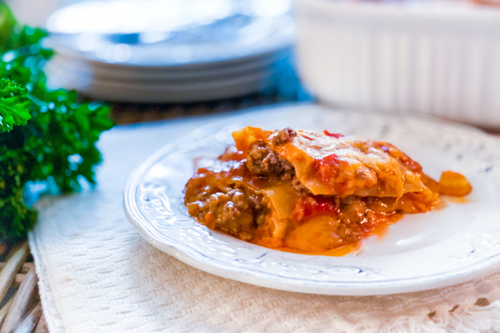

5 Ingredient Lasagna Recipe

This will be the easiest lasagna you have ever made- guaranteed! Our 5 Ingredient Lasagna is so simple to make and is delicious! We mix it up by using cheddar cheese and we keep the sauce light! The result is phenomenal and when my family requests a lasagna, I’m totally on board to make it!
Ingredients
- 12 oz Lasagna Noodles
- 1/2 Stick butter
- 1.5 lb ground beef
- 1 qt spaghetti sauce
- 8 oz Cheddar Cheese
Steps
- Preheat oven to 350 F.
- Brown ground beef, drain, and set aside.
- Layer lasagna dish with 1/4th of pasta sauce, 1/3rd of the ground beef, and 1/3rd of the cheese.
- Place a layer of noodles over top of the cheese, and dab with 3 TBS of butter.
- Repeat the above step to make a total of three layers.
- When the last layer of pasta noodles are placed add the last of the butter, sauce, and cheese.
- Bake for 40 minutes.
- Enjoy!